À partir de la puberté (12–13 ans), l'appareil génital masculin entre en activité continue. Les testicules assurent deux fonctions fondamentales régulées par un axe hormonal complexe. Comment ce système fonctionne-t-il et comment est-il régulé ?
Anatomie des organes : gonades, voies génitales, glandes annexes, organe de copulation. Composition du sperme.
Double fonction : exocrine (spermatozoïdes dans les tubes séminifères) et endocrine (testostérone dans le tissu interstitiel).
Structure du spermatozoïde. 4 phases : multiplication → accroissement → maturation (méiose) → différenciation (spermiogenèse). Durée : 74 jours.
Axe hypothalamus → hypophyse → testicule. GnRH pulsatile. LH → cellules de Leydig. FSH → cellules de Sertoli. Rétrocontrôle (−) testostérone + inhibine.
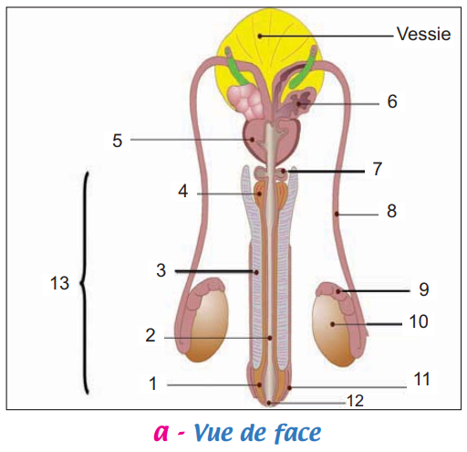
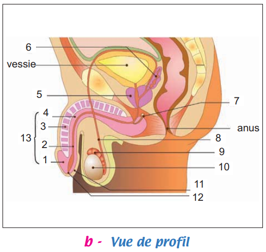
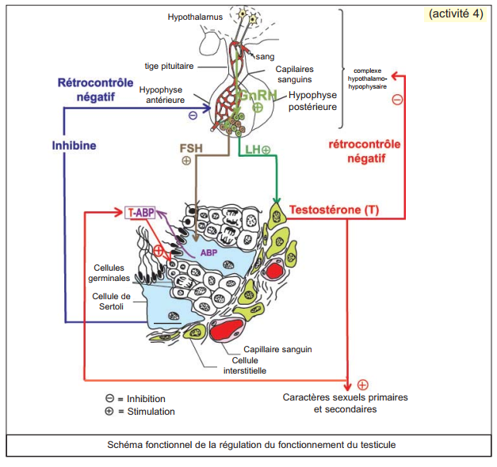
L'appareil génital masculin comprend des gonades (testicules), des voies génitales et des glandes annexes dont les sécrétions constituent le liquide séminal qui, mélangé aux spermatozoïdes, forme le sperme.
| Catégorie | Organes | Rôles essentiels |
|---|---|---|
| Gonades | Testicules ×2 (dans les bourses/scrotum) | Double fonction : production spermatozoïdes (exocrine) + sécrétion testostérone (endocrine). Température 34–35°C grâce au scrotum. |
| Voies génitales | Épididymes ×2 | Transit et maturation des spermatozoïdes (acquisition de la mobilité) |
| Canaux déférents ×2 | Transit des spermatozoïdes vers l'urètre | |
| Urètre | Évacuation du sperme vers l'extérieur | |
| Glandes annexes | Vésicules séminales ×2 | Liquide nutritif riche en fructose (énergie pour spermatozoïdes) |
| Prostate ×1 | Liquide laiteux riche en enzymes (activation spermatozoïdes) | |
| Glandes de Cowper ×2 | Liquide diluant le sperme, neutralise l'acidité urinaire | |
| Copulation | Pénis (verge) | Organe de copulation — dépôt du sperme dans les voies génitales féminines |
| Expérience | Résultat | Conclusion |
|---|---|---|
| Castration (ablation 2 testicules) chez rat adulte | Stérilité + atrophie tractus génital + régression caractères sexuels secondaires | Testicules nécessaires à la fertilité ET aux caractères sexuels secondaires |
| Greffe d'un fragment de testicule au niveau du cou du rat castré | Stérilité persistante + restauration des caractères sexuels secondaires | Un facteur chimique (hormone) du testicule contrôle les caractères sexuels — indépendant de la connexion aux voies génitales |
| Injection d'extraits testiculaires au rat castré | Stérilité + restauration des caractères sexuels secondaires | L'hormone est soluble et transportable par le sang |
| Injection de testostérone à des rats castrés | Rétablissement complet des caractères sexuels secondaires | La testostérone est l'hormone sexuelle mâle responsable des caractères sexuels secondaires |
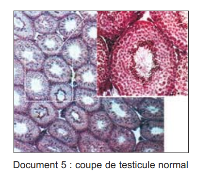
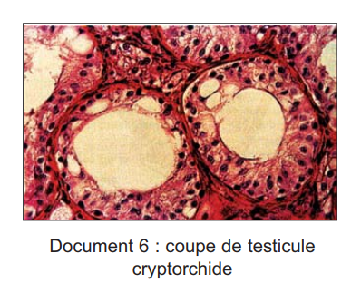
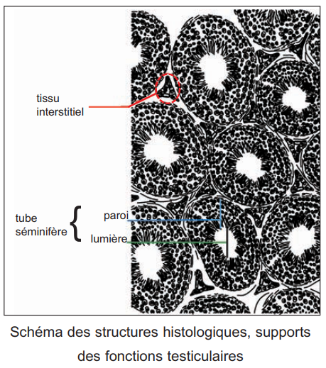
La spermatogenèse est l'ensemble des processus de formation des spermatozoïdes à partir des spermatogonies dans la paroi des tubes séminifères. Elle dure 74 jours chez l'homme et est continue à partir de la puberté.
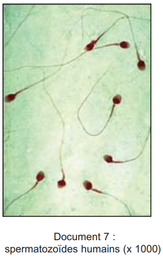
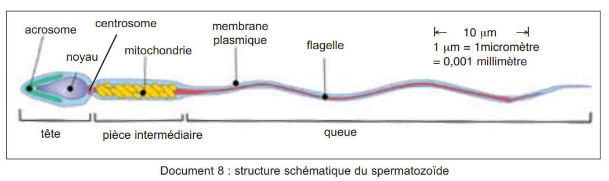
| Partie | Composants | Fonction(s) |
|---|---|---|
| Tête | Noyau haploïde (n=23 chr.) + Acrosome (vésicule lysosomale riche en enzymes) | Noyau : information génétique paternelle. Acrosome : enzymes pour pénétration dans l'ovocyte (réaction acrosomique). |
| Pièce intermédiaire | Mitochondries en hélice autour de la base du flagelle | Production d'ATP (énergie) pour les mouvements du flagelle |
| Queue | Flagelle entouré de la membrane plasmique | Propulsion — battements assument la nage du spermatozoïde vers l'ovocyte |
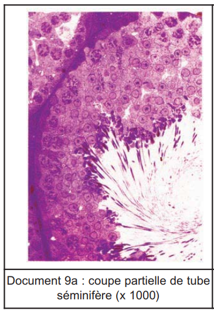
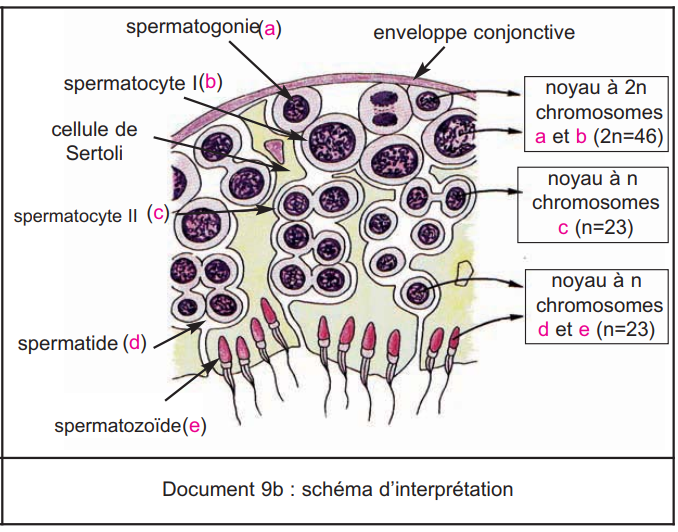
Le testicule est contrôlé par un axe à 3 niveaux : Hypothalamus → Hypophyse → Testicule. En retour, le testicule exerce un rétrocontrôle négatif sur l'hypothalamus et l'hypophyse pour stabiliser les sécrétions hormonales.
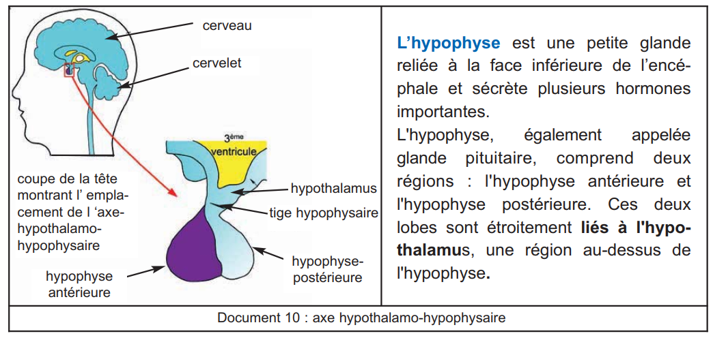
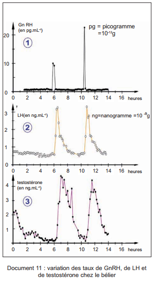
| Expérience | Résultat | Interprétation |
|---|---|---|
| Castration bilatérale d'un rat adulte | Élévation du taux plasmatique de FSH et LH | Disparition testostérone + inhibine → frein sur axe H-H levé → hypersécrétion gonadostimulines |
| Injection massive de testostérone à un rat castré | Arrêt des pulses de GnRH → baisse FSH et LH | La testostérone inhibe l'hypothalamus → ↓ GnRH → ↓ LH et FSH |
Le fonctionnement du testicule est régulé par un axe hypothalamo-hypophysaire avec rétrocontrôles négatifs qui stabilisent les taux hormonaux.
| Hormone | Glande sécrétrice | Cellules cibles | Action principale | Rétrocontrôle exercé |
|---|---|---|---|---|
| GnRH | Hypothalamus (neurones) | Cellules antéhypophysaires | Stimule LH et FSH (pulses /90 min) | — |
| LH | Antéhypophyse | Cellules de Leydig | Stimule sécrétion testostérone | — |
| FSH | Antéhypophyse | Cellules de Sertoli | Stimule synthèse ABP → active spermatogenèse (indirect) | — |
| Testostérone | Cellules de Leydig | Cellules cibles multiples | Caractères sexuels primaires + secondaires + spermatogenèse | Rétrocontrôle (−) sur hypothalamus ET hypophyse |
| Inhibine | Cellules de Sertoli | Antéhypophyse | Régule la spermatogenèse | Rétrocontrôle (−) spécifique sur FSH uniquement |
| ABP | Cellules de Sertoli (sous FSH) | Cellules germinales | Transporte et concentre testostérone dans les tubes → active spermatogenèse directement | — |